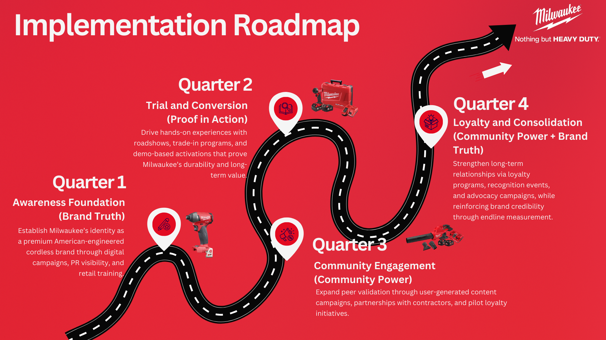

Strategy Development
Communication Objective
Milwaukee’s communication strategy in Vietnam is guided by broader growth pathways identified through the Ansoff Matrix (Table 4). The framework outlines four potential strategies, summarized below:
| Strategy Type | Application to Milwaukee Vietnam |
|---|---|
| Market Penetration | Focus on converting professional users (e.g., HVAC, electricians) via promotions, demos, and trials. |
| Market Development | Expand reach to factories, industrial agencies, repair centers, and institutional contractors. |
| Product Development | Introduce localized kits, hand tool bundles, or accessory packs tailored to Vietnamese use cases. |
| Diversification | Extend into adjacent categories such as hand tools, accessories, and light gardening equipment. |
For the scope of the one-year communication plan, the strategy emphasizes market penetration (converting professional users through demos and promotions) and market development (expanding reach into institutional contractors and new professional segments). Product development and diversification remain longer-term opportunities.
Building on this strategic foundation, Milwaukee’s communication strategy in Vietnam is designed around three core objectives, as mentioned in Introduction Section, which directly address the perception barriers identified in the situation analysis. These objectives are anchored in the strategic pillars of Brand Truth, Proof in Action, and Community Power.
Objective 1: Brand Truth → Reposition Milwaukee as a premium American-engineered cordless solution
- Shift perceptions from “overpriced” to “long-term professional value.”
- Highlight Milwaukee’s U.S. heritage, engineering excellence, and superior durability.
- Reinforce the ecosystem advantage of the M12™ and M18™ platforms, positioning them as reliable and future-ready solutions.
Objective 2: Proof in Action → Drive product trial and conversion among target tradespeople
- Reduce entry barriers through on-site demos, trade-in activations, and first-time purchase incentives.
- Move beyond passive awareness by encouraging hands-on testing and proof-of-performance experiences.
- Emphasize safety, efficiency, and total cost-of-ownership savings compared to lower-priced alternatives
Objective 3: Community Power → Build loyalty and advocacy through peer-led validation
- Empower professionals and key opinion consumers (KOCs) to share real-world experiences.
- Shift trust from advertising to authentic user-generated content and peer recommendations.
- Develop long-term loyalty by positioning Milwaukee not only as a tool brand but as a partner in professional success.
Target Audience
Milwaukee’s communication strategy is built on a segmentation–targeting–positioning (STP) approach to ensure clear focus and impact.
Segmentation
The professional tools market in Vietnam can be segmented into:
- Tradespeople and technicians (end-users of tools, working in HVAC, electrical, construction).
- Retailers and wholesalers (intermediaries and decision-makers controlling availability and recommendation).
- Institutional buyers (factories, industrial agencies, contractors), though currently a smaller focus.
Targeting
From these segments, Milwaukee prioritizes two main groups:
- Primary Target (Pull Strategy): Professional Tradespeople and Technicians
- Typically men aged 25–45 working in HVAC, electrical, and construction.
- Many are self-employed or work in small contractor teams with limited budgets but clear performance demands.
- Purchase drivers: durability, battery life, safety, and ease of handling in challenging job-site conditions (heat, dust, humidity).
- Highly influenced by peer recommendations and hands-on experience before committing to a new brand.
- Secondary Target (Push Strategy): Retailers and Wholesalers
- Includes authorized resellers, store owners, and hardware wholesalers.
- Typically aged 35–55, with significant experience in retail or distribution.
- Purchase drivers: profitability, stock turnover, after-sales support, and warranty reliability.
- Influence end-user adoption by recommending brands they trust or that provide stronger sales incentives.
Positioning
Milwaukee positions itself in Vietnam as: “A high-performance, American-engineered cordless partner for professionals, delivering superior durability, safety, and productivity, backed by a trusted ecosystem.”, stated by Ruby Tran - North Region Manager at Milwaukee Vietnam.
This positioning statement links directly to the three communication objectives:
- Brand Truth → Correct misperceptions by reinforcing Milwaukee’s American heritage and engineering.
- Proof in Action → Demonstrate tool performance through trials and activations.
- Community Power → Build advocacy through peer validation and authentic professional stories.
Messaging Strategy
Milwaukee’s challenge in Vietnam is “not product performance but market perception”, according to David Lam, Assistant Marketing Manager at Milwaukee Vietnam. Thus, the messaging strategy must reposition Milwaukee from being seen as “overpriced” to being valued as a professional partner that delivers long-term performance, safety, and trust. The core brand message is illustrated as below:
Milwaukee: RedPower
Superior Technology - The Professional’s Partner
This message combines two pillars:
- “Superior Technology” → communicates advanced engineering, durability, and innovation without over-relying on “American heritage” wording.
- “The Professional’s Partner” → anthropomorphizes the brand, positioning Milwaukee as a trusted companion for professionals rather than just a tool supplier.
Milwaukee aims to position itself in Vietnam as a high-performance cordless tool brand, trusted by professionals and rooted in American engineering excellence. The revised brand message reflects both its global legacy and local relevance. We applied the Benefit Ladder framework as Table 5 below:
Table 5. Benefit ladder framework
| Level | Message for Milwaukee Vietnam |
|---|---|
| Product Attribute | U.S. heritage; M12™ and M18™ platforms; long battery life; cordless mobility; durability; safety features. |
| Functional Benefit | Tools last longer, work safer in harsh job-site conditions, and save time through portability and performance. |
| Emotional Benefit | Professionals feel more confident, respected, and empowered when using a brand trusted globally for performance. |
| Brand Value | Milwaukee is not just a tool, it is a partner for professional success, ensuring reliability and efficiency under pressure. |
Strategic Role of Messaging
- Reinforces Brand Truth by communicating heritage, durability, and engineering excellence.
- Drives Proof in Action by framing tools as solutions that must be experienced (demos, trials, peer-led content).
- Builds Community Power by humanizing the brand and strengthening peer trust through advocacy and user stories.
Communication Channels
Milwaukee’s repositioning strategy in Vietnam requires an integrated marketing communications (IMC) approach that balances awareness, conversion, and loyalty-building. The plan leverages both pull (end-user) and push (retailer/wholesaler) strategies to ensure consistent messaging across the customer journey. Table 6 represents the summary of current communication channels.
Table 6. Channel mix overview for Milwaukee Vietnam
| Objective | Key Channels | Execution Focus |
|---|---|---|
| Brand Truth | • Digital platforms (Facebook, YouTube, Zalo) • PR & trade press • In-store visibility (POS, displays) |
• Awareness campaigns highlighting durability, safety, and U.S. heritage • Educational content (videos, infographics) explaining M12™/M18™ ecosystems • Dealer training to reinforce brand story |
| Proof in Action | • Roadshows & demo vans • Trade-in activations at retail points • Partnerships with contractors & training centers |
• Hands-on demo experiences (“Try Before You Buy”) • Incentives for first-time users (discounts, bundle kits) • Tool trade-in programs to lower entry barrier |
| Community Power | • Social media UGC campaigns • Peer influencer/KOC programs • Loyalty clubs & referral programs |
• Collect and amplify authentic user stories • Encourage contractors to share job-site content • Recognition programs for loyal users (Milwaukee Pro Club) |
IMC Integration Principles
While the channel mix is structured around Milwaukee’s three strategic pillars, channels must also work together along the customer journey. Table 7 maps key channels to funnel stages, showing how Milwaukee can move professionals from awareness to advocacy.
- Consistency of Core Message → “RedPower. Superior Technology, The Professional’s Partner” will be embedded across all touchpoints, ensuring unified positioning.
- Channel Synergy → Digital creates awareness, demos drive adoption, and community advocacy sustains loyalty. Each channel reinforces the others rather than operating in isolation.
- Push–Pull Balance → Retail partners are incentivized to push Milwaukee, while end-users are pulled through awareness, trial, and peer validation.
- Localization → Content and activations are tailored to Vietnam’s cultural context (e.g., peer influence, high value on safety and productivity, discount-driven trial behaviors).
Table 7. Channel mapping by Funnel Stage
| Funnel Stage | Primary Channels | Role in Funnel |
|---|---|---|
| Awareness | • TikTok • YouTube Ads • Facebook Ads |
• Capture attention, build top-of-mind awareness, and spark curiosity. |
| Consideration | • YouTube reviews • Zalo groups • Influencers |
• Provide education, peer validation, and product comparisons. |
| Purchase | • Facebook retargeting • Zalo CRM • Retail demos |
• Trigger conversion through targeted offers, demos, and trade-ins. |
| Loyalty/Advocacy | • FB Groups • Zalo push • Milwaukee Pro Club |
• Sustain engagement, encourage UGC, and nurture community advocacy. |
Implementation Roadmap
Milwaukee’s repositioning strategy in Vietnam will be rolled out over one year, structured into four sequential phases. Each phase builds on the previous one, ensuring a balance between immediate awareness and long-term loyalty. The roadmap below (Figure 4) outlines actions over a 12-month horizon, divided into quarterly phases. This roadmap ensures a logical progression: first correcting perceptions, then encouraging trial, and finally building advocacy and retention.
- Quarter 1: Awareness Foundation (Brand Truth): Establish Milwaukee’s identity as a premium American-engineered cordless brand through digital campaigns, PR visibility, and retail training.
- Quarter 2: Trial and Conversion (Proof in Action): Drive hands-on experiences with roadshows, trade-in programs, and demo-based activations that prove Milwaukee’s durability and long-term value.
- Quarter 3: Community Engagement (Community Power): Expand peer validation through user-generated content campaigns, partnerships with contractors, and pilot loyalty initiatives.
- Loyalty and Consolidation (Community Power + Brand Truth): Strengthen long-term relationships via loyalty programs, recognition events, and advocacy campaigns, while reinforcing brand credibility through endline measurement.
